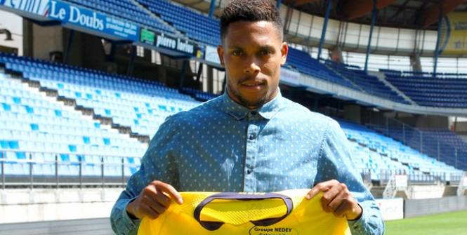
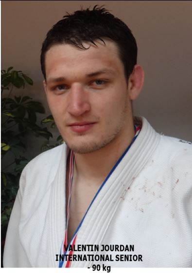
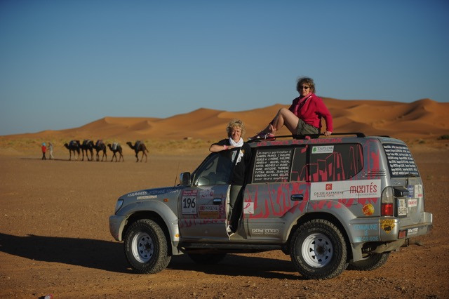

"J'ai commencé ma carrière en tant que joueur de foot amateur. J'avais de grosses qualités physiques, mais pour passer un cap et déouvrir le monde professionnel, j'ai ressenti le besoin d'être soutenu et d'avoir des outils au niveau mental. C'est pour cette raison que j'ai fait appel à Jean-Philippe PELEGRIN. Ensemble, nous avons travaillé sur la gestion de mes émotions par différents moyens comme la respiration ou l’imagerie mentale… Ces techniques m’ont beaucoup apporté. Aujourd’hui, je suis footballeur professionnel depuis un an et je me suis engagé avec un nouveau club pour 3 saisons. Cela n’aurait sans doute pas été possible sans l’aide de Jean-Philippe. Désormais, je suis parfaitement autonome sur la maitrise de mes émotions. Cependant, je continue de faire appel à lui quand j’ai des moments de faiblesse ou à l’approche de grosses échéances. Nous partageons également ensemble ma réussite."
Mickël ALPHONSE – FC SOCHAUX-MONTBELIART

"La préparation Mentale est une science dont beaucoup de gens parlent, mais dont peu en connaissent réellement les fondamentaux… C’est pourquoi, se faire accompagner par un professionnel tel que Jean-Philippe PELEGRIN est quelque chose de nécessaire pour obtenir de réels résultats. Dans mon cas, les outils mis en place ont notamment pu m’aider dans la gestion du stress en compétition, ainsi que dans la préparation des différentes étapes la précédent !""
Valentin JOURDAN

"Bonjour, je m’appelle Nathalie et j’ai participé en octobre 2015 au trophée roses des sables en 4x4 ; rallye basé sur l’orientation, avec des actions solidaires et situé au Maroc.
Bien que connaissant tout à fait ma coéquipière, la préparation mentale m’a permis de relativiser les moments difficiles. Nous avons passé 2 semaines pratiquement toujours ensemble, soit dans la voiture, soit dans la tente ; c’était notre premier rallye, donc l’inconnu est synonyme de pression, erreurs, malentendu….
Je pense, que grâce à cette préparation, nos relations n’ont pas changé.
Et elle me sert toujours dans la vie quotidienne ; j’ai appris à relativiser beaucoup de choses."
Nathalie JOURNOUD - Co pilote Rallye Trophée Roses des Sables
"J'ai participé en 2015 à la préparation mentale organisée par J-P avec Nathalie, ma co-pilote.
Il semblait important d'appréhender le rallye Trophée Roses des Sables, dans de bonnes conditions au niveau mental.
Tout au long des séances, J-P à mis en avant différentes formes de gestion du stress. Il est évident qu'une mise en pratique en dehors des séances est importante. Elle l'a été jusqu'au moment de participer à notre rallye, et également pendant notre rallye, car nous sommes dans des conditions différentes de la vie de tous les jours.
J'ai été plus sensible à une technique que j'apprécie particulièrement et que je continue à utiliser quand le besoin s'en ressent.
Merci pour cet accompagnement".
Christelle GILBERTAS – Pilote Rallye Trophée Roses des Sables.

"La préparation que m’a apporté Jean-Philippe a été pour moi un rempart contre la peur que représentait ce concours. La préparation m’a donné la force et les armes nécessaires pour m’organiser et entamer ma préparation aux examens. Au fur et à mesure que les séances passaient, je sentais grandir en moi de l’assurance et l’envie de réussir. Au début, je n’y croyais pas, j’avais juste besoin de soutien, mais après le soutien, ces séances représentaient des échéances auxquelles je pouvais observer mes progrès dans ma préparation… Au début, Jean-Phi me guidait… à la fin, c’est moi qui adaptait mon programme… Ce fut une belle expérience qui a contribué à ma réussite. Merci Jean-Philippe".
Amina TOUATI – Préparation CAPEPS.